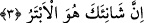

çeşittir.
a. Kalb ile şükür: Nîmetin başkasından değil, sâdece Allah’tan olduğunu bilmektir.
b. Lisân ile şükür: Nîmet vereni övmek, senâ etmektir.
c. Uzuvlar ile şükür: Nîmeti verene hizmet etmek, O’na boyun eğmektir.
İşte namaz şükrün bu üç çeşidini de bir araya getirmektedir.
Allah’ın ismini anarak, Arapların en değerli malı olan deve, sığır gibi büyük baş
hayvanı kurban kes! Yâni onun için deve kurban et de muhtâclara tasadduk et!
Muhtâclarla ilgilenmeyen ve ufak tefek yardımları onlardan esirgeyen kimseler gibi
olma!
Bu sûre âdetâ bir önceki sûrenin mukâbili gibidir.
Burada geçen “namaz” bayram namazı ile; “nahr” ise kurban kesmek olarak tefsîr
edilmiştir. Bu da sûrenin Medenî oluşuna uygun düşmektedir.
Atâ’dan rivâyete göre, “namaz”, Müzdelife’de hacıların kıldığı sabah namazı, “nahr”
de Minâ’da kesilen kurbandır.
Hz. Mustafâ (s.a.)’e; “Eğer bir kimse fakîr olduğu için kurban kesmeye gücü yetmezse
kurbandan hâsıl olan sevâbı nasıl elde edebilir?” diye sordular. Şöyle cevap verdi:
“Dört rekât namaz kılar, her bir rekâtta bir defa Fâtiha, on bir defâ Kevser okur, bu
şekilde Allah Teâlâ o kimsenin amel defterine altmış kurban sevâbı yazar.” Keşfü’l-
esrâr’da böyle kayıtlıdır.
Hz. Ali’den gelen bir rivâyete göre burada yer alan “nahr” kelimesinden maksad,
namazda eli göğüse koyarak bağlamaktır.
Süleyman Teymî’nin görüşüne göre ise “Ve’nhar” demek, duâ ederken ellerini göğüs
hizâsına kadar kaldır, demektir.
et-Te’vîlâtü’n-Necmiyye’de şöyle deniyor: Enâniyet ve inniyyet develerini, rûhânî sağ
elini cismânî sol elinin üzerine “elem neşrah leke sadrak” sûresinin kılıcı ile açılan
göğsünün tam üzerine koyarak kes!
3. Asıl sonu kesik olan, şüphesiz sana hınç besleyendir.
Evet sana buğz ettiği için asıl sonu kesik olan odur. Çünkü bir iş, türetilmiş bir
kelimeye nisbet edilirse, o kelime o işin sebebini bildirir.
“Ebter” kelimesinin kökü olan “el-Betr”, aslında “kuyruk kesmek” anlamına kullanılır.
Sonra “sonun kesikliği” bu kelime ile ifâde edilmeye başlanmıştır. Arapçada bir
kimsenin yerine geçecek çocuğu yoksa o kimse için “o ebterdir” denir.
Bu durumda mânâ şöyle olur: Geriye nesli ve güzel bir nâmı kalmayacağı için asıl
soyu kesik olan odur. Sana gelince, zürriyyetin ve güzel şöhretin, fazîletinin eserleri
kıyâmete kadar bâkî kalacaktır.